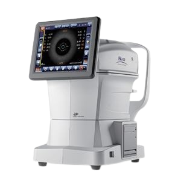
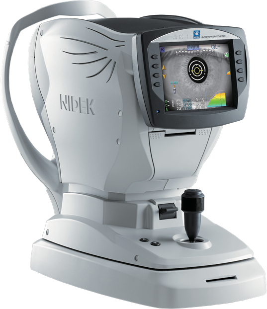

الانكسار الآلي
Auto Kerato-Refractometer
ليس مجرد أداة فحص؛ بل هو منظومة ميكاترونكس متكاملة. نحن لا نصمم الجهاز ليعمل فقط، بل ليكون نقطة البداية الأدق التي تسرّع قرارك السريري وتحمي سمعة عيادتك.

محطة الفحص الشاملة (5 في 1)
هندسيًا، دمجنا عدة تقنيات في هيكل واحد. سريريًا وتجاريًا، هذا يعني عائد استثمار أسرع (ROI)، ومساحة عيادة أوفر.
1. الانكسار (AR)
قياس الخطأ الانكساري آليًا بدقة عالية.
2. تحدب القرنية (AK)
حساب انحناء القرنية المركزي لاكتشاف الاستجماتيزم.
3. ضغط العين (NCT)
نفخة هواء ذكية لقياس الضغط بدون تلامس.
4+5. تضاريس و سماكة
إضاءة خلفية (Retro-illumination) لاكتشاف المياه البيضاء، وطوبوغرافيا لسطح العين الأمامي.
Position
مكونات الجهاز (System Components)
مصدر الانبعاث (SLD)
Stage 1: Signal GenerationEngineering Function
توليد حزمة ضوئية تحت حمراء (840nm). يتميز الـ SLD بأنه يجمع بين التوجيه الدقيق لليزر والأمان العالي لمصابيح الـ LED، مما يمنع تكوّن ضوضاء الشوشرة على الصورة.
Clinical Edge
✓ الطول الموجي غير مرئي، فلا يتسبب بتقلص بؤبؤ المريض بسبب الوهج المزعج، ويخترق عتامة المياه البيضاء بكفاءة عالية.

شاشة لمس (Touch UI)
واجهة رسومية قابلة للإمالة لضبط المحاذاة بسهولة.
عصا التوجيه (Joystick)
لتحريك الرأس البصري (3D) بدقة والتقاط القياس.
مسند المريض
إطار هندسي لمنع حركة الرأس وضمان دقة الفحص.
وحدة الطباعة الفورية
طابعة حرارية مدمجة لإصدار التقرير الورقي.
التحديات الفسيولوجية
حجم العين ليس المتغير الوحيد. العادات اليومية والتقدم بالعمر يغيران فسيولوجيا العدسة. الأجهزة العادية تفشل هنا، لكن هندستنا توفر الحلول:
إجهاد الشاشات
PSEUDOMYOPIAالتركيز المستمر يسبب تشنج العضلة الهدبية، مما يعطي قراءة قصر نظر وهمي.
الحل الهندسي: تفعيل نظام (Auto-fogging) لدفع الهدف وإرخاء العضلة تماماً قبل القياس.
تصلب العدسة
PRESBYOPIAفقدان مرونة العدسة الداخلية بعد سن الـ 40 يمنع قدرة العين على التركيز للقريب.
النتيجة السريرية: الجهاز يقيس للمسافات البعيدة بدقة، لكن المريض سيحتاج حتماً لنظارة قراءة (+D).
المياه البيضاء
CATARACTإعتام العدسة يشتت أشعة القياس ويضعف إشارة الكاميرا بشكل كبير.
الحل الهندسي: استخدام مصدر ضوء (SLD 840nm) يخترق العتامة، مع تفعيل (Cataract Mode) لرفع حساسية الكاميرا.
مختبر الفيزياء البصرية (Optics Lab)
سريريًا، أنت تبحث عن القراءة الدقيقة. هندسيًا، نحن نحسب انزياح الطور للضوء العائد من الشبكية تبعًا للطول المحوري. جرب التغيير وشاهد الخوارزمية.
DSP Telemetry Readout
SYSTEM NOMINAL. PERFECT FOCUS.
محاكي: التضبيب الآلي
التأثير الفسيولوجي:
محاكي: تضاريس القرنية
💡 التحليل المباشر
التتبع الآلي (AI Auto-Tracking)
التكامل مع السجلات الطبية (EMR)
الجهاز لا يطبع ورقة حرارية فحسب، بل يصدر البيانات مهندسياً بصيغة XML عبر بروتوكولات HL7/DICOM.
The Conclusion
"التكنولوجيا لا تلغي براعة الطبيب...
بل تختصر وقته، وتحميه من الأخطاء."